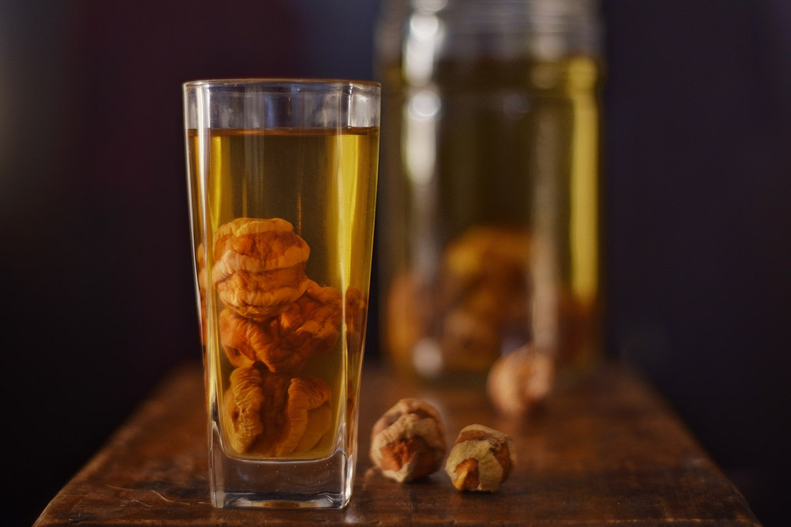
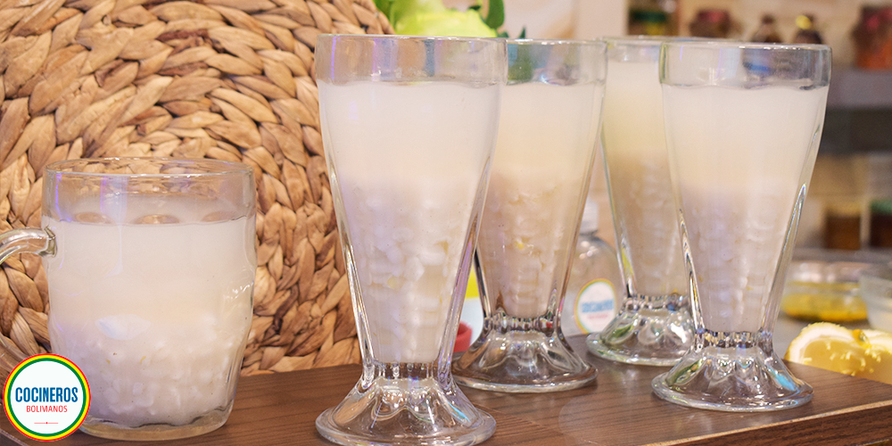
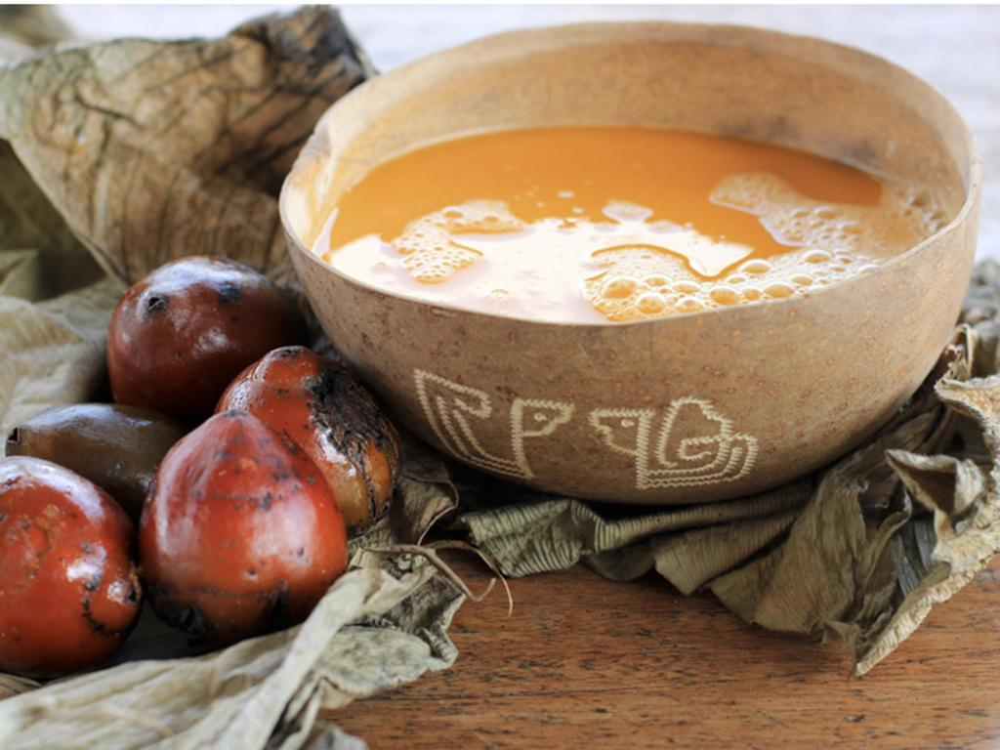
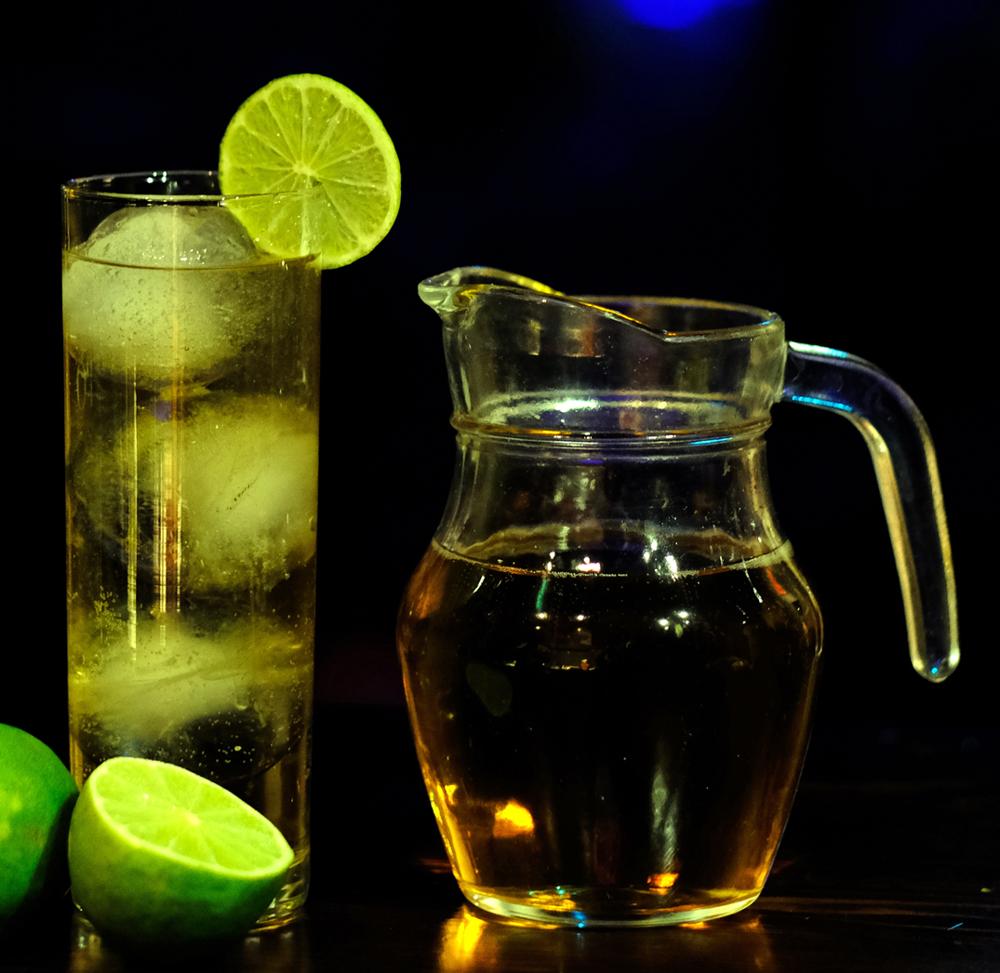
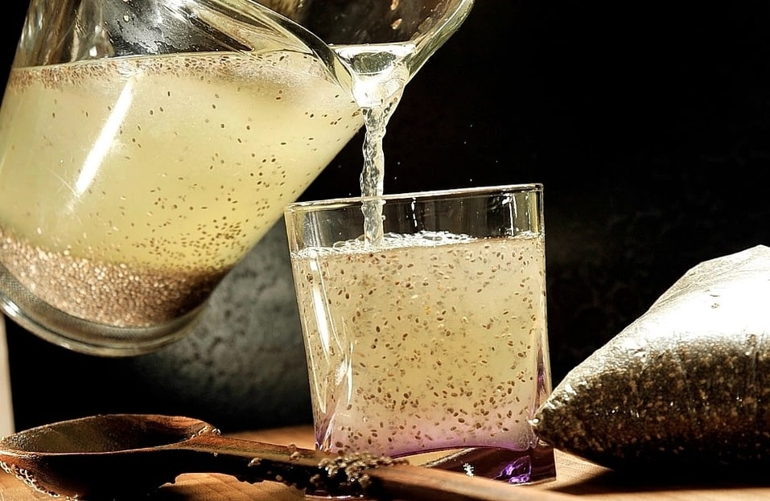
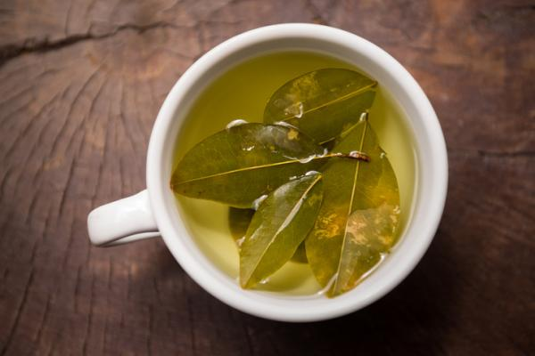

Bolivia es un país como todos en Sudamerica rico en variedad gastronomica, con platillos y bebidas elaboradas con base en tradiciones indígenas
Mocochinchi
El mocochinchi se elabora cpn duraznos deshidratados o secos y un jarabe dulce a punto de caramelo
Las frutas se hierven en agua caliente y se les agrega clavos dulces, canela y cardamomo. Al estar cocidos se añade el almíbar a punto de caramelo y se mezcla muy bien hasta que este se disuelva por completo.
Es uno de los postres y bebidas de Bolivia que se consume bien frío.
Somó
Somó Bebidas Es una bebida refrescante que típicamente se encuentra en las ciudades y poblaciones cálidas de Bolivia. Uno de los lugares donde se encuentra esta bebida todos los días y en cualquier horario es en la población de Cotoca que se encuentra en el Departamento de Santa Cruz.
Chicha
La chicha es una de las bebidas con mayor tradición y más populares en el país andino.
Se prepara con diferentes frutas que se colocan en agua por 2 o 3 días para que se fermenten. Luego de esto se saca el líquido, se le agrega dulce y estará lista para consumir. Es importante que tenga un alto porcentaje de almidón.
La chica era consumida por los antiguos bolivianos en ceremonias y rituales religiosos.
Chuflay
El nombre de “Chuflay” es usado desde que un conductor de ferrocarriles de la Bolivia Railway Co. acostumbraba tomar su whisky o gin con ginger ale en el coche comedor de dicho tren, pero ocurrió que un día olvidaron las botellas. El garzón encargado, muy preocupado le ofreció un “Llallagua” (Nombre de una mina de estaño), una bebida en base a singani (bebida típica boliviana) con gaseosa, hielo y limón. El conductor gringo rechazó momentaneamente este trago por miedo a la resaca y el desconocimiento de la bebida, pero más pudo la necesidad hasta que aceptó el trago. Al siguiente día fue él quien solicitó otra dosis de “Llallagua” en vista de que no le había dejado resaca. El conductor dijo en inglés “sure fly” (“vuelo seguro”) y el garzón, que no hablaba inglés, pronunció: CHUFLAY.
Jugo de linaza
Bebida típica de Bolivia que se elabora con semillas de linaza, una abundante fuente en antioxidantes y fibra, con un alto contenido en ácidos grasos omega 3.
El jugo de linaza se prepara con linaza, agua y jugo de limón. La bebida obtenida es muy refrescante, sobre todo en temporadas calurosas.
Mate de coca
El mate de coca es una de las bebidas más antiguas y de mayor tradición en Bolivia, elaborada en las zonas de los andes bolivianos y peruanos.
Se trata de una infusión o té preparado con hojas de coca, agua, azúcar o miel, que se bebe en las alturas andinas para tolerar el mal de montaña o “soroche”. Contrario a lo que se suele creer, no es dañino ni produce intoxicación.
Es una bebida de gran valor simbólico que al ingerirla provoca una sensación de bienestar y energía similar a la que da el café.